Колонія "Альфа"
Місія
Місія: створити першу постійну автономну колонію на Марсі. Наша головна довгострокова ціль — створити повністю автономну колонію, яка не буде залежати від поставок з Землі. Для цього усі ключові потреби колонії, такі як - їжа, кисень, паливо, будівельні матеріали та медикаменти мають вироблятися на самому Марсі.
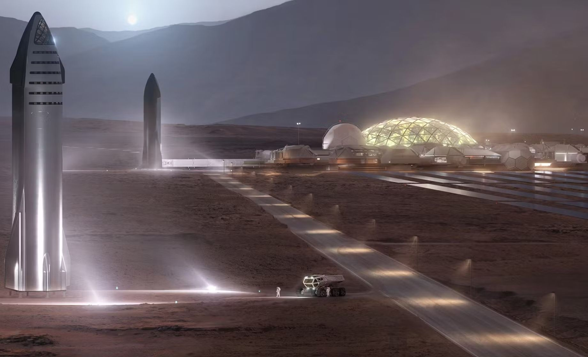
База "Альфа"
База на поверхні марсу має стати спочатку прихистком для колоністів. Щоб вона змогла перетворитися у справжню першу колонію для людей вона має захистити мешканців від таких речей як - марсіанської атмосфери, радіації, низької температури. Також на ній має вироблятися кисень для дихання, паливо для космічних кораблів та їжа з водою для колоністів.
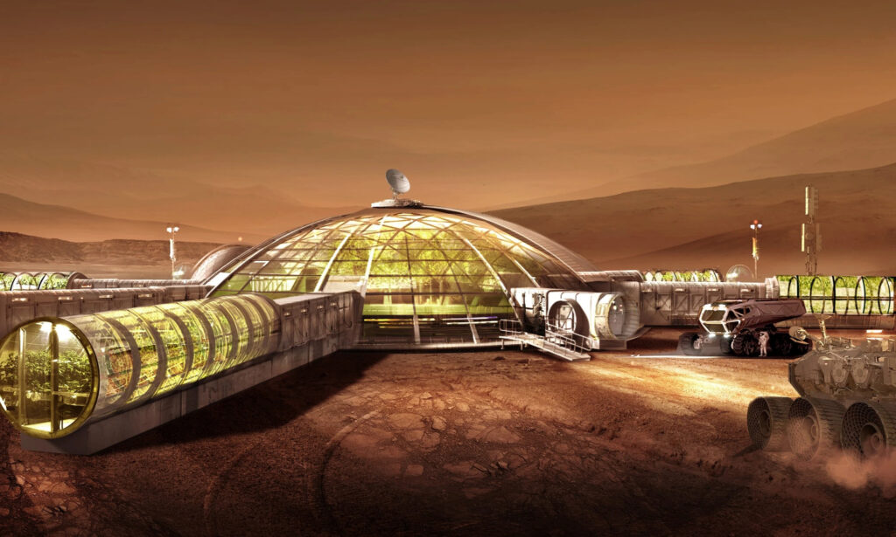
Радіація
Через радіацію нормальна наземна колонія на марсі неможлива без достатнього екранування.Тому існує ідея замість того щоб вести захист з Землі або створювати його на Марсі — можна побудувати цю базу під землею в лавових туннелях. На картинці зображено приклад такої підземної колонії на Марсі, яка надійно захищена.
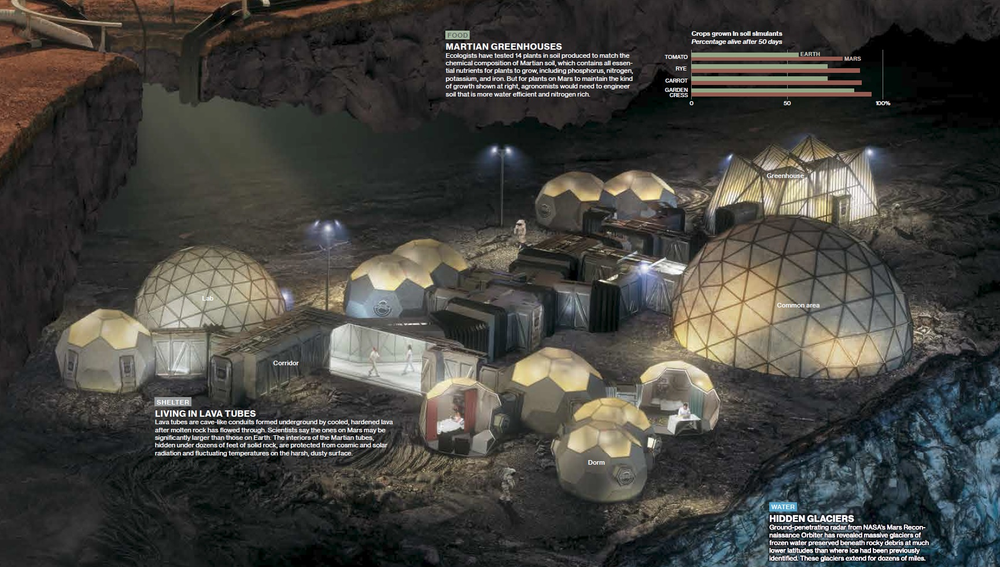
Як вирощувати їжу на марсі
Вирощувати рослини на марсі складно із-за слабкого сонця, радіації та дуже низької температури та тиску. Тому найкраще їх можна вирощувати у автоматичних теплицях, де замість сонця — спеціальна лампа, надійний захист від радіації і контрольовані комп'ютером умови вирощування.
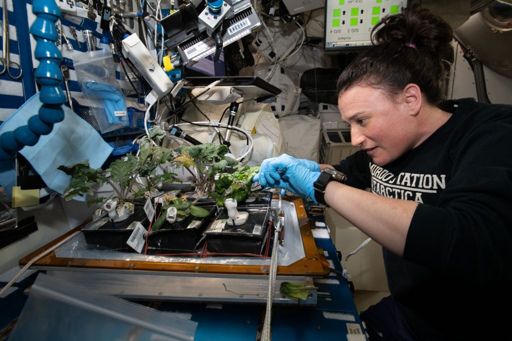
Паливо
Ми маємо вирішити проблему - як в разі небезпеки колоністам повернутися на Землю? Для цього нам допоможе атмосфера, що на % с95кладається з вуглекислого газу та льодовики. І за допомогою цих двох речей ми можемо зробити паливо. За допомогою деяких хімічних махінацій можна вивести воду і метан. Метан може бути ракетним паливом, але він може горіти лише за наявності кисню. Вода має кисень у своїй формулі. Отже, за допомогою електролізу води ми ділимо її формулу на гідроген та кисень. І ось так ракетне паливо готове.
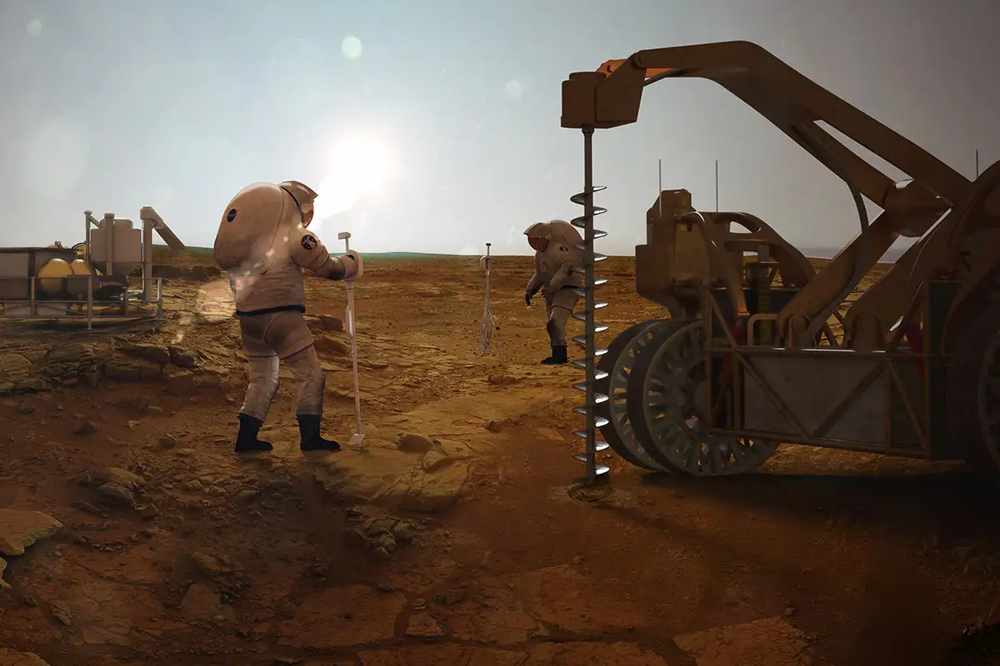
Екіпаж
Екіпаж складається не лише з астронавтів, але із вчених таких як астрофізики, геологи, та спеціальні інженери і налічує приблизно 15-20 людей.
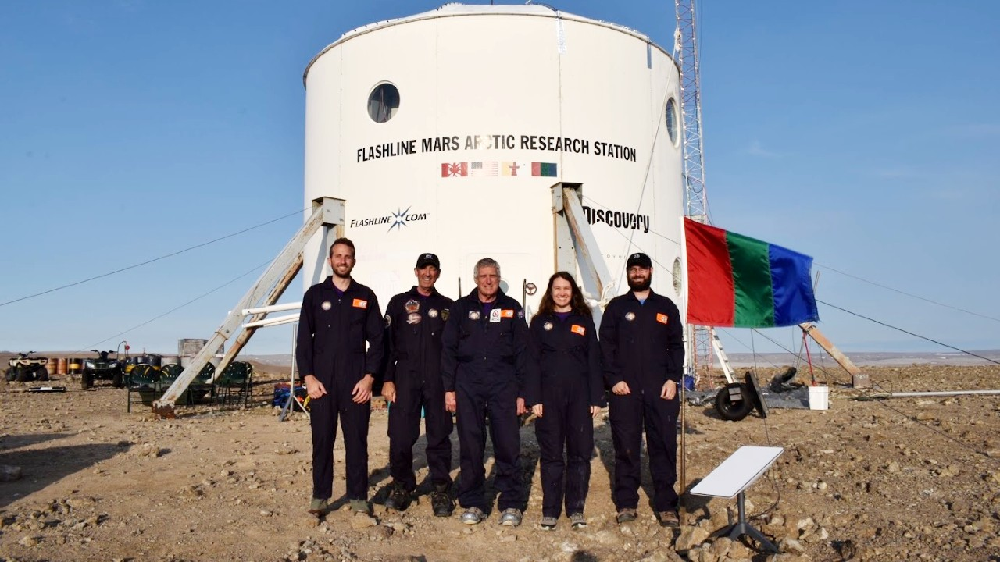
Цікаві факти
Марс має гравітацію, яка становить лише 38% від Землі. Це значить, що людина яка важить 80 кілограмів на Марсі була б майже 30 кілограм, але жити під такою слабкою силою може мати негативний вплив на м'язи, кістки та серця на Марсі, який є одною з головних медичних проблем майбутньої колонізації.
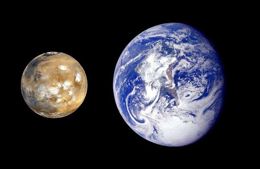
Марс має величезні пилові бурі, які можуть вкрити цілу планету і тривати кілька місяців. Вони настільки сильні, що блокують Сонце для Марса, та спричиняючи великі проблеми для сонячних батарей та комунікацій.
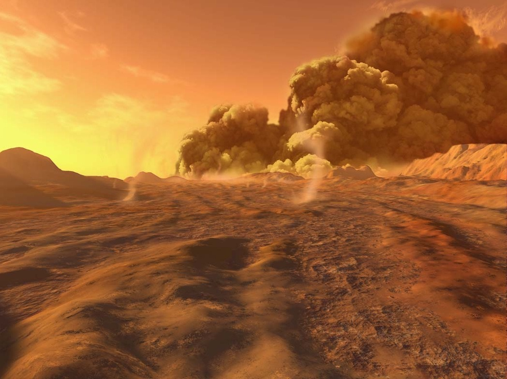
Подорож до Марса триває від 6 до 9 місяців, залежно від розташування планет. У результаті колоністи будуть дуже ізольовані: сигнал між Землею і Марсом займає 4- 24 хвилини в один спосіб, отже ніхто не зможе назвати їх у реальному часі.
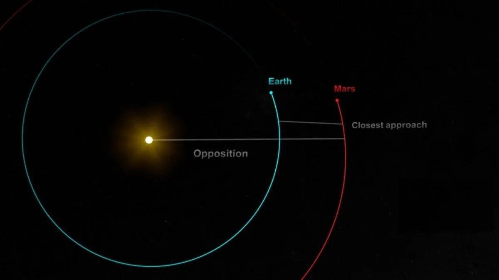
На Марсі розташований найбільший вулкан у Сонячній системі — Олімп. Його висота складає приблизно 22 км, що практично втричі перевищує висоту Евересту. Цей регіон може бути надзвичайно важливим для майбутніх колоністів, оскільки він відкриває можливості для геологічних досліджень і вивчення підземних запасів льоду.
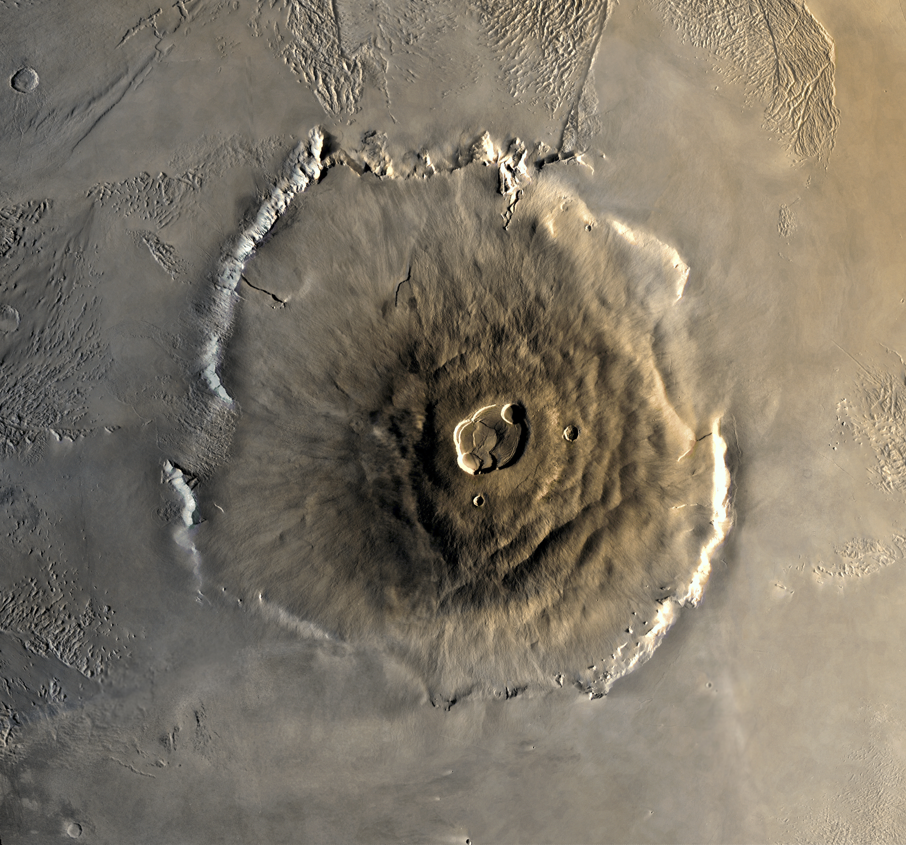
Галерея

|
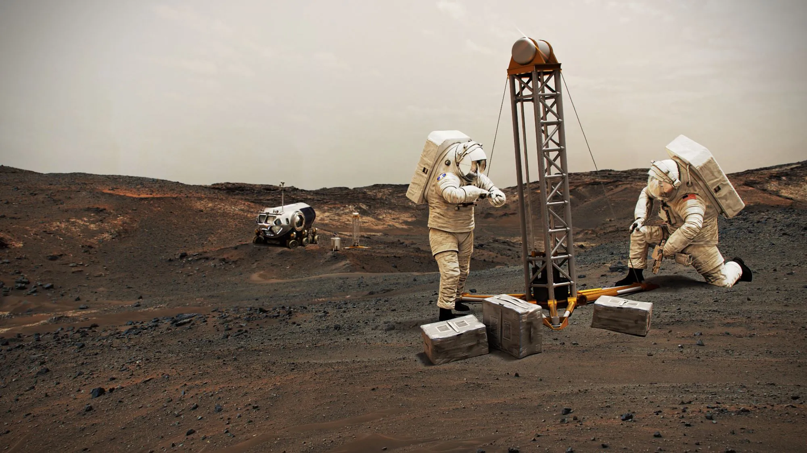 |
|---|---|
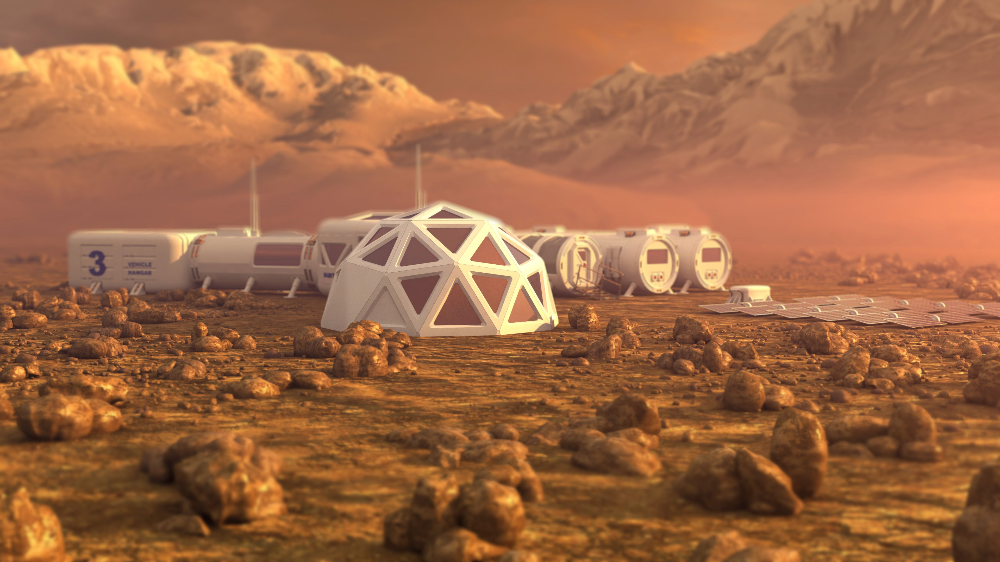 |
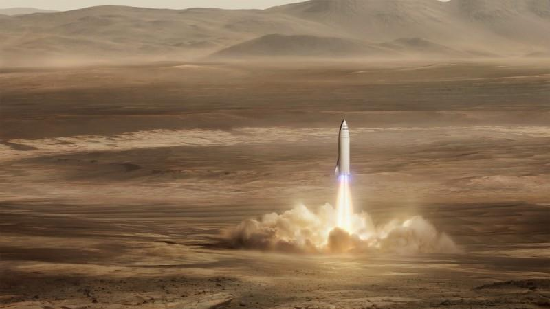 |